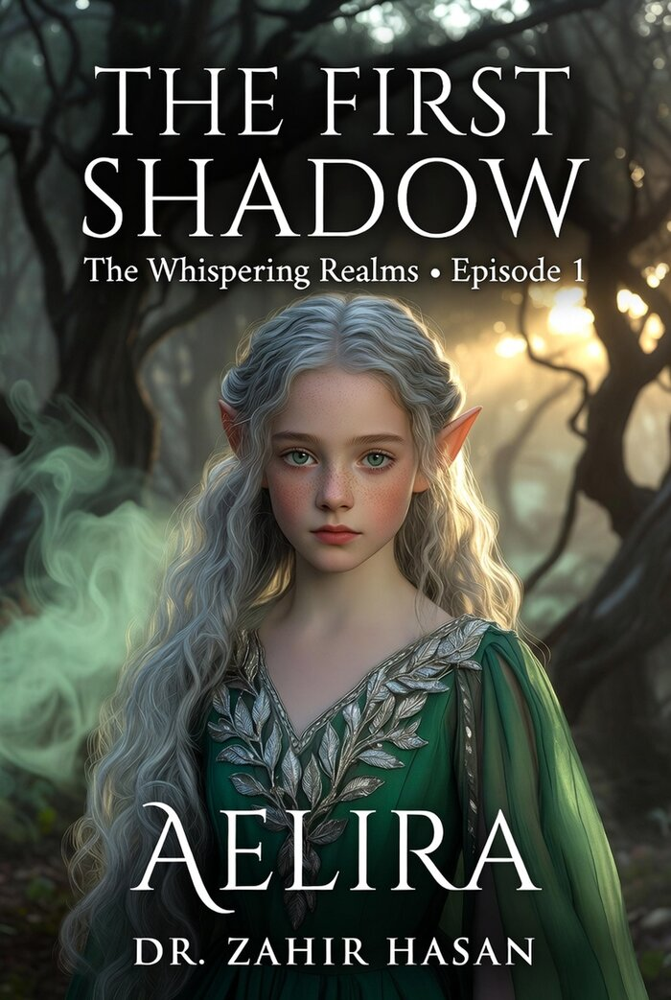

The Whispering Realms
A quiet, luminous series about a young elf girl who learns that the world is larger — and more alive — than she ever imagined.
When the first shadows begin to move differently, Aelira discovers she can hear things others cannot. Guided by curiosity and a growing sense of responsibility, she steps into the Whispering Realms — places where memory, magic, and courage intertwine.
Meet Aelira & Friends
The heart of the series is a small group of characters whose kindness and bravery light the way.
Aelira
A thoughtful elf girl with silver-blonde hair, pale green eyes, and freckles. Curious, brave in quiet ways, and deeply connected to the living world around her.
The First Shadow
Not every shadow is something to fear. Some carry stories, warnings, and invitations to look closer at the world.
Episode 1 — The First Shadow
The opening chapter of Aelira's journey has been fully illustrated and written. It introduces the tone, the world, and the first gentle mystery that will pull her deeper into the Realms.
Further episodes are planned. This page will be updated as new installments are completed.